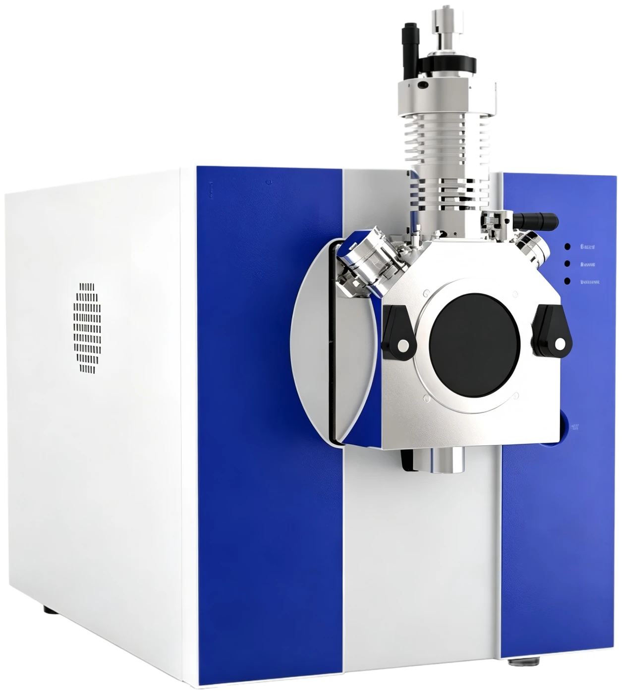

◆ Mass Spectrometry
SQ 1610
Single Quadrupole Mass Spectrometer
m/z 5 – 2000>10,000 amu/sS/N Ratio >100:1Source Swap in Under 30 SecondsSix orders of magnitude
View original source page ↗
BIKAI SQ 1610 single-quadrupole LC-MS is engineered for outstanding anti-contamination performance. Instrument downtime is mostly caused by contamination rather than hardware specifications, so SQ 1610 addresses contamination risks throughout the full ion path: orthogonal spray design, active exhaust system, heated counter-flow curtain gas paired with a 0.3 mm cone orifice (without consumable capillary), and a gold-plated molybdenum quadrupole. These four independent protective measures together deliver stable mass-axis performance with mass stability of 0.2 amu over 24-hour operation. Delivered as a complete analytical system bundled with a binary UHPLC front-end.
Mass Spectrometer
| Parameter | Specification |
|---|---|
| Analyser | 200 mm circular pure-molybdenum quadrupole, gold-plated |
| Resolution | Unit mass resolution |
| Mass axis stability | 0.2 amu / 24 h |
| Repeatability | Reserpine peak area RSD below 8% |
| Acquisition modes | Full scan, SIM, simultaneous full scan and SIM, alternating scan |
| Detector | Discrete-dynode electron multiplier |
| Vacuum system | Three-stage differential; 40 m³/h rotary; 30 and 60 L/s oil-free multi-port turbo, air-cooled |
| Dimensions | 330 × 350 × 585 mm |
| Data system | Independent acquisition/processing software; English, Chinese, Russian UI |
Bundled Binary UHPLC Front End
| Parameter | Value |
|---|---|
| Maximum system pressure | 18,000 psi — 1.7 to 5 µm columns, HPLC and UHPLC on one system |
| Pump | 0.001–5.000 mL/min, parallel short-stroke binary gradient, 4 solvent selection, active plunger wash |
| Autosampler | 4 × 54 vials or 4 × 96-well, cooled 4°C–ambient, carryover below 0.0025% |
| Column oven | Forced-air, ±1°C, RT+5–90°C, four 300 mm columns with optional switching valves |